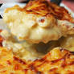

Mac & Cheese

Recipe Description
Creamy, Cheesy, comforting Mac&Cheese to enjoy
on those cold night, alone or with a special someone
This easy-to-follow mac and cheese will hug your stomach
and make you feel like heaven, because an easy meal doesn't
equate to a bad one.
Ingredients
- 1 teaspoon kosher salt, plus more for boiling
- 8 oz dried pasta shells (225 g)
- 10 oz shredded sharp cheddar cheese (295 g), divided
- 4 oz american cheese (115 g), cubed
- 2 tablespoons cornstarch
- ½ stick unsalted butter
- 1 teaspoon mustard powder
- ¼ teaspoon cayenne pepper
- 1 ½ cups whole milk (360 mL)
- 1 ½ cups heavy cream (360 mL)
- 1 large egg
- 2 oz shredded mozzarella cheese (200 g)
- 2 oz shredded parmesan cheese (55 g)
Steps
- Preheat the oven to 350°F (180°C).
-
Bring a large pot of well-salted water to a boil. Add the pasta and cook for 2 minutes less than recommended on the package (you want the pasta to have a slight bite; it will finish cooking while it bakes), then drain.
-
In a large bowl, combine 8 ounces of shredded cheddar cheese with the American cheese and cornstarch. Use your fingers to gently toss until all of the cheese is coated.
-
Melt the butter in a large pot over medium heat. As the butter begins to sizzle, add the mustard powder and cayenne and stir to combine. Toast the spices until the butter turns golden brown, about 1 minute.
-
Slowly whisk in the milk and heavy cream. Continue whisking until the milk begins to simmer with small bubbles rapidly rising to the surface, about 3 minutes.
-
Whisk the egg in a small bowl, then temper it by slowly adding a few spoonfuls of the simmering milk mixture while continuing to whisk until incorporated.
-
Slowly drizzle the tempered egg back into the milk mixture, whisking vigorously until the egg is fully incorporated.
-
Remove the pot from the heat and add the cheddar cheese mixture, a small handful at a time, whisking between each addition to make sure the cheese melts evenly (mix quickly enough that the mixture does not cool too rapidly, but slowly enough that the emulsion does not break).
-
Add the cooked pasta to the pot and gently fold to coat with the sauce, then season with 1 teaspoon of salt. Pour the pasta and sauce into an 8-inch square baking dish with 2-inch-high sides (at this point, the pasta can be wrapped and refrigerated for up to 3 days).
-
In a medium bowl, combine the remaining 2 ounces of cheddar cheese, the mozzarella cheese, and Parmesan cheese. Sprinkle on top of the pasta.
-
Bake the mac and cheese until the cheese is melted and beginning to bubble around the edges, about 20 minutes. Turn the broiler on high and broil the mac and cheese until the cheese begins to brown all over, about 5 minutes. Let the mac and cheese sit for 5 minutes for the sauce set and cool slightly.
-
Serve warm.
-
Enjoy!